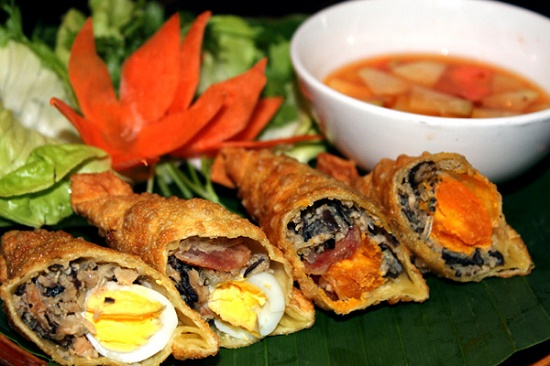
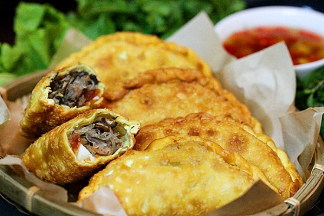
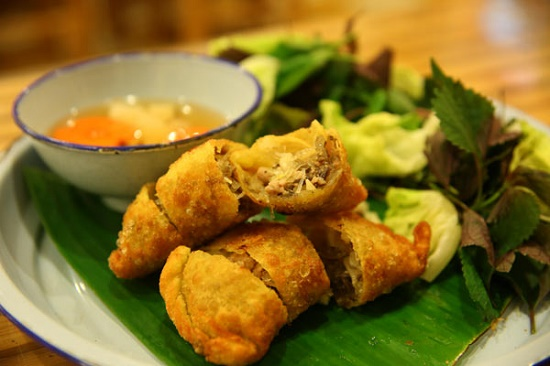
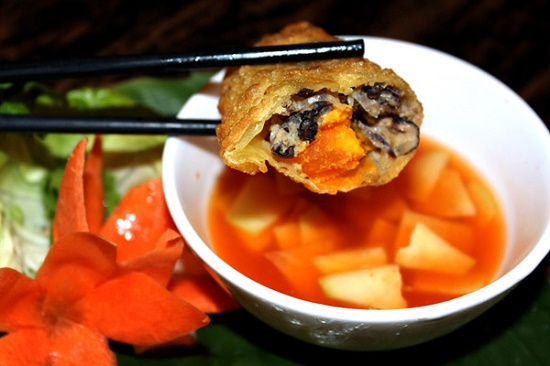
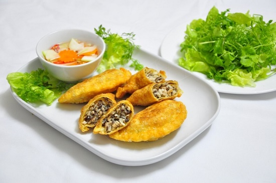

Bánh gối Hà Nội – tinh hoa ẩm thực Việt
Đã bao giờ bạn thắc mắc tại sao món bánh gối Hà Nội lại hấp dẫn với thực khách ở mọi lứa tuổi, mang đến hương vị đậm đà và luôn là một trong những đặc sản của mảnh đất Hà Thành chưa? Cùng Vivu Hà Nội trả lời câu hỏi thú vị này nhé!
Giới thiệu về bánh gối Hà Nội
Bánh gối từ lâu được biết đến như là một thức quà quen thuộc, làm say mê biết bao nhiêu tâm hồn ẩm thực của người Tràng An. Vào những ngày cuối năm, khi những cơn gió mùa kéo đến, mang theo cái giá lạnh của mùa đông, người ta chỉ muốn rủ nhau đến quán ăn vỉa hè, thưởng thức vài chiếc bánh gối đang nóng hổi ăn kèm với bát nước chấm đậm đà ấm vị.
Vỏ bánh được nhào dẻo, quánh, mềm từ bột mì và nước, sau đó được cán ra làm nhiều miếng mỏng. Nhân bánh là sự kết hợp của thịt nạc băm, mộc nhĩ, miến thái nhỏ, một số nơi có cho thêm trứng cút, thêm một số loại củ quả như: cà rốt, su hào,…cùng với các gia vị cho vừa đủ. Sau khi cuốn nhân vào vỏ sao cho vỏ bánh phải bao trọn phần nhân, tiến hành công đoạn rán bánh. Bánh được rán ngập dầu trong chảo, đợi đến khi nào bánh vàng, giòn thì vớt ra rồi thấm bớt mỡ. Đặc biệt, không thể không kể đến món nước chấm ngon tuyệt làm từ mắm, chanh, đường, ớt,.. kèm theo một ít đu đủ hay dưa ghém.
Thưởng thức bánh gối Hà Nội
Khi chiếc bánh gối nóng hổi vừa thổi vừa ăn ra lò, chắc hẳn bạn sẽ bị cuốn hút bởi màu sắc vàng ruộm đầy rực rỡ của nó cộng với màu xanh mát của rau sống được trình bày đẹp mắt trên đĩa ăn. Chấm bánh vào nước chấm rồi cắn một miếng, thấy vị giòn, béo ngậy của vỏ bánh; vị ngon, mềm của nhân bên trong; vị chua chua, ngọt ngọt đầy hấp dẫn của nước chấm. Tất cả quện vào với nhau làm nên sự độc đáo cho món ăn nổi tiếng đất Hà Thành này. Có lẽ chính vì vậy, nhiều du khách nước ngoài đã thực sự bị chinh phục bởi những hương vị đặc biệt ấy.
Bánh gối có giá không quá đắt, chỉ cần bỏ ra 10k hoặc hơn chút ít, bạn có thể thưởng thức hương vị tuyệt ngon, tròn vị này.
Bánh gối Hà Nội tuy không cầu kì về cách làm, chỉ là một món ăn giản đơn nhưng chắc chắn rằng, sự giản đơn ấy sẽ mang đến sự độc đáo, làm nên sức hấp dẫn cho ẩm thực nước nhà.